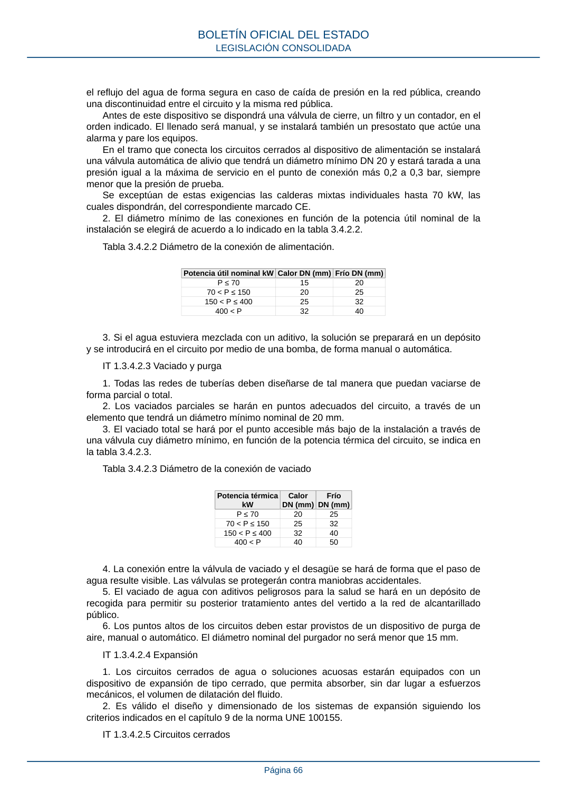

DB-HE2 RITE · edición 2022-08-02 · capa asociada
Documento RITE-asociada · SHA-256 del PDF ad1680c83bf4c7f5c656af1794c32ad0669ad9f36ac293737ff3f95177ff7b26
Página física 66 de 97.
Copia fiel del PDF fuente · Fuente oficial
Ficha de la disposición en la fuente oficial
Texto extraído y reorganizado: Basado en datos de la Agencia Estatal Boletín Oficial del Estado. PDF reproducido: Fuente de los datos: Agencia Estatal Boletín Oficial del Estado.
Formato: Texto de la página (Markdown)
el reflujo del agua de forma segura en caso de caída de presión en la red pública, creando una discontinuidad entre el circuito y la misma red pública. Antes de este dispositivo se dispondrá una válvula de cierre, un filtro y un contador, en el orden indicado. El llenado será manual, y se instalará también un presostato que actúe una alarma y pare los equipos. En el tramo que conecta los circuitos cerrados al dispositivo de alimentación se instalará una válvula automática de alivio que tendrá un diámetro mínimo DN 20 y estará tarada a una presión igual a la máxima de servicio en el punto de conexión más 0,2 a 0,3 bar, siempre menor que la presión de prueba. Se exceptúan de estas exigencias las calderas mixtas individuales hasta 70 kW, las cuales dispondrán, del correspondiente marcado CE. 2. El diámetro mínimo de las conexiones en función de la potencia útil nominal de la instalación se elegirá de acuerdo a lo indicado en la tabla 3.4.2.2. Tabla 3.4.2.2 Diámetro de la conexión de alimentación. Potencia útil nominal kW Calor DN (mm) Frío DN (mm) P ≤ 70 15 20 70 < P ≤ 150 20 25 150 < P ≤ 400 25 32 400 < P 32 40 3. Si el agua estuviera mezclada con un aditivo, la solución se preparará en un depósito y se introducirá en el circuito por medio de una bomba, de forma manual o automática. IT 1.3.4.2.3 Vaciado y purga 1. Todas las redes de tuberías deben diseñarse de tal manera que puedan vaciarse de forma parcial o total. 2. Los vaciados parciales se harán en puntos adecuados del circuito, a través de un elemento que tendrá un diámetro mínimo nominal de 20 mm. 3. El vaciado total se hará por el punto accesible más bajo de la instalación a través de una válvula cuy diámetro mínimo, en función de la potencia térmica del circuito, se indica en la tabla 3.4.2.3. Tabla 3.4.2.3 Diámetro de la conexión de vaciado Potencia térmica kW Calor DN (mm) Frío DN (mm) P ≤ 70 20 25 70 < P ≤ 150 25 32 150 < P ≤ 400 32 40 400 < P 40 50 4. La conexión entre la válvula de vaciado y el desagüe se hará de forma que el paso de agua resulte visible. Las válvulas se protegerán contra maniobras accidentales. 5. El vaciado de agua con aditivos peligrosos para la salud se hará en un depósito de recogida para permitir su posterior tratamiento antes del vertido a la red de alcantarillado público. 6. Los puntos altos de los circuitos deben estar provistos de un dispositivo de purga de aire, manual o automático. El diámetro nominal del purgador no será menor que 15 mm. IT 1.3.4.2.4 Expansión 1. Los circuitos cerrados de agua o soluciones acuosas estarán equipados con un dispositivo de expansión de tipo cerrado, que permita absorber, sin dar lugar a esfuerzos mecánicos, el volumen de dilatación del fluido. 2. Es válido el diseño y dimensionado de los sistemas de expansión siguiendo los criterios indicados en el capítulo 9 de la norma UNE 100155. IT 1.3.4.2.5 Circuitos cerrados BOLETÍN OFICIAL DEL ESTADO LEGISLACIÓN CONSOLIDADA Página 66

Datos candidatos: compruebe celdas y notas en el PDF.